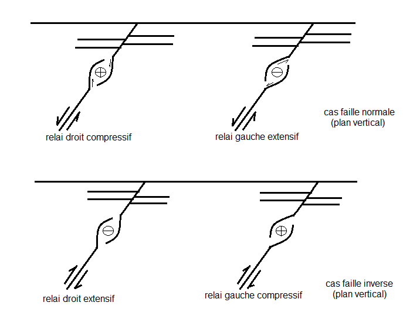
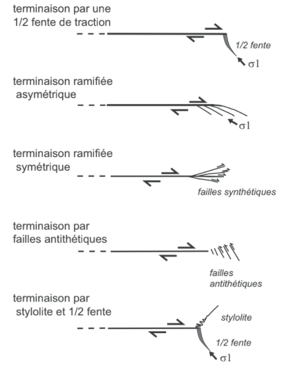
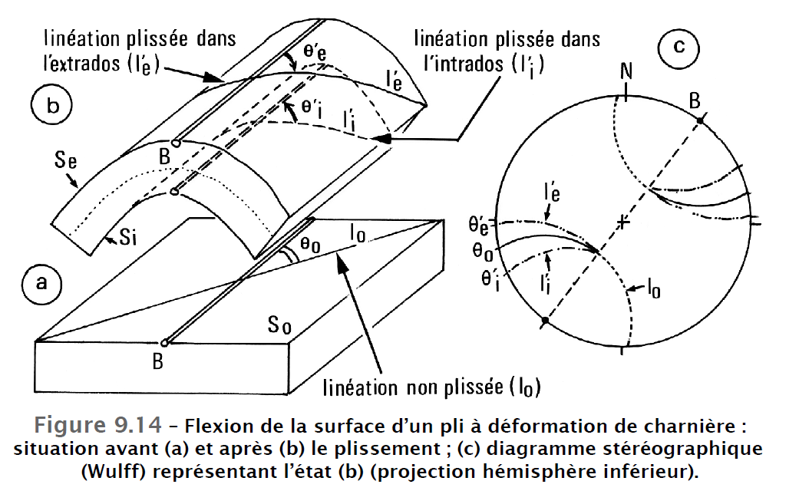
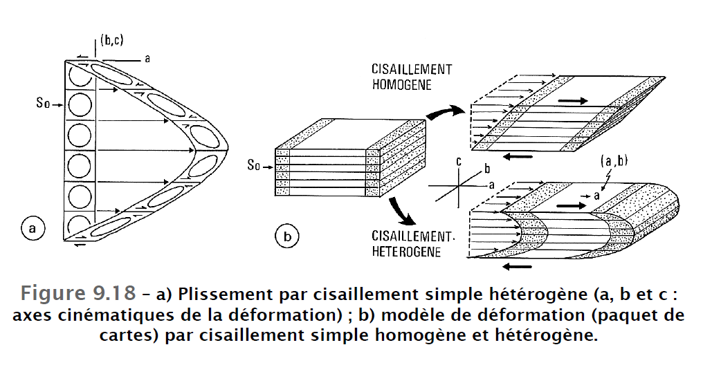

//La tectonique est ce qui englobe la cinématique (mouvements) et les causes (contraintes), tandis que géologie structurale traite les structures.
//C’est la disposition actuelle dans l’espace.
//Modification de l’attitude que les roches ont subi depuis leurs formations (transport et déformation).
Les roches déformées sont appelées les Tectonites, c’est toute roche ayant acquis une structure particulière nettement différente de la structure initiale. Il existe 2 types de Tectonites :
Les vitesses et les durées de déroulement des phénomènes naturels tectoniques. Ce sont des sujets délicats à étudier, et c’est par manque d’observation directe. Donc 3 conceptions sont avancées pour tenter d’expliquer le déroulement des phénomènes naturels :
La vitesse de la déformation varie d’un cas à un autre. Il y a lieu de distinguer les vitesses instantanées lors de la déformation saccadée, les accélérations, les ralentissements et les vitesses moyennes obtenues sur de longues périodes. En générale, la fourchette des vitesses est très restreinte, elle se situe autour de cm/an.
1 ier cas : déformation par flexion (plissement) connait une vitesse de 0.01 à 1 cm/an pour les strates et de 0.1 à 1 cm/an pour l’écorce terrestre.
2 ième cas : déformation par rupture (cisaillement), la vitesse varie et peut atteindre 1m/s pour les failles sismiques. La faille de San Andreas se déplace de 5 mm/an ; les rides océaniques de 1 à 20 cm/an ; et les nappes de charriage de 1 à 5 cm/an.
3 étapes successives sont nécessaires pour une étude tectonique :
Plaque lithosphérique : correspond à la partie superficielle, d’une épaisseur 120 à 200 km. Elle comprend une croûte continentale CC et/ou une croûte océanique CO (épaisse de 15 à 60 km, moyenne=30km) et une partie du manteau lithosphérique située entre 30 et 120 km. Ces 2 composantes sont séparées par la discontinuité de Moho. La CC est dominée par une composition granitique (Fk>Pl) à grano-dioritique (Fk inf à Pl) d’une densité de 2.7 ; et une croûte inférieure d’une densité 2.9. Le manteau a une densité qui avoisine 3.3 et constitué de Péridotite. Sa base coïncide avec l’isotherme 1300°C qui est en partie en fusion. (La température de fusion d’un grand de Quartz est de 1700°C). Le passage de la lithosphère vers l’asthénosphère est marqué par un changement thermomécanique, et contrôlé par l’augmentation de la température principalement, et de la pression.
Les zones de déformation dans le globe ; elles sont dans le nombre de 3. Et elles se concentrent au niveau de la limite de la plaque lithosphérique qui sont des zones fortement sismiques.
Gradient géothermique est l’évolution de la température en fonction de la profondeur.
Types de gradients géothermiques : (2.7°C pour chaque 100m ou 30°C/km) …
Domaines de la déformation naturelle : • Superficiel (cassant) ; • Profond (solide plastique) ; • Très
profond (liquide visqueux).
Les contraintes sont les résultats de l’exercice de force qui sont de 2 types : force de volume et force
de surface.
Les forces de volume : agissent sur le bloc rocheux, l’explication la plus évidente est la force
de pesanteur Fp=m.g.
Une colonne de roche de hauteur h, de section S, et de densité ρ, est soumise à une force de pesanteur
Fp=Shρ ; cette force est dirigée vers le bas (elle est verticale, et tout corps ayant une masse subit cette
force, et elle dépend de leur volume et de leur densité).
La force d’Archimède est aussi une force de volume qui agit sur les ensembles rocheux, cet exemple est
illustré par un bloc continental de densité de 2.7, reposant en équilibre hydrostatique sur le manteau
de densité 3.3. Ce bloc continental reçoit une poussée verticale Fa dirigée vers le haut, elle est égale
au poids du volume du manteau déplacé Fa=Srgρm : avec S : surface du globe, r : hauteur du manteau déplacé
et ρm est la densité du manteau. Et le bloc étant en équilibre Fa=Fp.
//les forces de volume n’engendre pas de déformation.
Les forces de surface : agissent sur les surfaces limitant des blocs rocheux, donc il existe 2
cas : quand la surface est horizontale et quand elle est inclinée.
Lorsque la force Fs agit sur une surface horizontale S, elle est de fait normal à celui-ci Fs=Shρa. Toutes
les surfaces horizontales du globe terrestre reçoivent des forces de volumes.
Lorsque la force Fs agit sur une surface faisant un angle α, elle se décompose vectoriellement en une
force FN (va créer de l’aplatissement) et une FT (va créer du glissement et de la rupture).
Les forces de volume et de surface peuvent agir en même temps sur une même surface en cas de l’interphase
de 2 plaques lithosphériques dans un contexte de subduction (la convergence exerce des forces de surface,
et l’empilement exerce des forces de volume).
Notions de contrainte : c’est une force par une unité de surface selon la direction considérée en un point
donné. Il y en a 2 types : tectonique et lithostatique. La représentation de l’état des contraintes se
fait dans un ellipsoïde des contraintes (σ1 principale maximale ; σ2 principale intermédiaire ; σ3 principale
minimale).
Les divers types d’état de contraintes
1ier cas : contraintes dans toutes les directions σ1=σ2=σ3 ; l’ellipsoïde de contrainte est représenté
par une sphère correspond à un état hydrostatique.
2ième cas : σ1> σ2=σ3 ; contrainte répartie selon une symétrie de révolution, la forme de l’ellipsoïde
est en forme de lentille. C’est l’axe de révolution (axe de rotation).
3ième cas : contrainte principale σ1> σ2> σ3 ; l’ellipsoïde de contrainte est poly-axiale.
Comportement des roches soumises à des contraintes
Une roche soumise à un champ de contrainte enregistre 3 types de déformation successible, qui
sont schématisées dans le (graph1) taux de déformation en fonction de la contrainte appliquée.
Influence de la déformation hydrostatique : (graph2) la pression de confinement supprime la rupture
;
Influence de la température : la température abaisse le seuil de plasticité et augmente la déformation
plastique (graph3) ;
Influence de la teneur en fluide: (graph4) l’augmentation de la teneur en fluide dans une roche a
haute température amollie (affaiblie) les roches et favorise la fracturation hydraulique à faible pression
de confinement et à température faible.
La déformation consiste à toute opération qui fait varier la forme, les dimensions, la position et la taille d’un corps d’un état initial à un état final. La déformation peut être conçue comme des mouvements et des modifications géométriques, ou bien comme des relations entre les déformations et leurs causes.
La tectonique peut enregistrer 3 composants élémentaires de déformation, séparés ou combinés, ils sont la translation, la distorsion et la rotation.
Translation : changement de position des particules ;
Distorsion : changement de forme (allongement et raccourcissement) ;
Rotation : changement d’orientation par rapport à un référentiel.
// Les seuls déformations visibles sur le terrain sont les résultats de la distorsion.
Elle est définie par des rapports dimensionnels entre l’état initial et l’état final. Ces rapports, appelés ‘internes’, expriment des changements de longueur et de forme.
Plusieurs rapports sont utilisés pour caractériser ces changements initiaux Li à un changement final
Lf de longueur. L’un de ces rapports est l’étirement λ (quand l’étirement λ>1 donc c’est un allongement,
et quand λ < 1 raccourcissement).
ε = Lf - Li/Li --> λ = Lf/Li = 1+ ε
La déformation finie d’un objet initialement sphérique (A=B=C=rayon) peut être exprimé par un ellipsoïde définit par 3 axes :
Si on suppose que toutes les déformations interviennent uniquement en plan, par 2 axes, notamment par allongement et raccourcissement maximal λ1 λ3.
La caractérisation de l’état déformé en 2D mis en évidence 2 régime de déformation, la déformation coaxiale (cisaillement pur) et non-coaxiale (cisaillement simple).
// Dans un cisaillement pur, on a toujours une bande de fentes de tension.
Typologie de la déformation 3D : λ1 est l’axe d’allongement, λ3 est celui de raccourcissement dans un plan, en prenant la 3D, on va ajouter la λ2. [ Diagramme de Flinn].
Soumis à des contraintes tectoniques, les milieux rocheux peuvent se déformer par fracturation. Les déformations cassantes naturelles ainsi reconnu peuvent être regroupées en 2 types :
Une faille est une fracture accompagnée d’un mouvement relatif des compartiments qu’elle sépare. La longueur d’une faille varie du mètre à une centaine de kilomètres. Le terme microfaille est utilisé pour décrire les failles à l’échelle de l’affleurement ; et celui de zone de faille pour des failles à l’échelle kilométrique. On utilise le terme de joint de cisaillement pour une fracture ayant un taux de déplacement très faible (millimétrique).
Le plan de faille est un plan de cisaillement, généralement irrégulier, ondulé ou courbé, parfois il est remplacé par une zone plus ou moins épaisse, constituée de plusieurs plans de cisaillement.
Le palissage du plan de faille, lors du glissement relatif des compartiments, forme ce qu’on appelle un miroir de faille. Le miroir d’une faille porte souvent des traces de glissement, dites tectoglyphes. Parmi ces derniers, des stries de glissement et/ou de friction.
// Les stries sont très importantes, elles permettent de déterminer la direction du glissement. La présence de plusieurs familles de stries superposées rend compte de plusieurs rejeux successifs, et on parle donc de Tectonite polyphasique.
La ligne ou le vecteur du glissement sur le plan de la faille : A et A’ initialement superposé est appelé rejet réel (fig.1), il peut se décomposer en plusieurs rejets apparents qui dépendent à la fois de l’attitude du plan de faille (verticale, horizontale, inclinée pendage 0-180°) et de la ligne de glissement (valeur, direction et sens du plongement).
Le compartiment situé au-dessus de la faille est appelé le toit et le compartiment situé au-dessous est
appelé mur. On dit que le toit est porté par le mur.
La strie est assimilable à un élément linéaire dans l’espace ou prise en relation avec son plan porteur
: pitch.
Plusieurs critères sont utilisés pour classer les failles :
Les qualificatifs dextre et senestre sont réservés pour l’usage en plan horizontal, ils sont prescrits
en section.
Les failles normale, inverse et décrochante peuvent s’organiser individuellement ou en réseau symétrique
ou asymétrique. Pour les situations intermédiaires des rejets présentant 3 composants, on peut avoir
plusieurs combinaisons (faille normale + décrochement D/S) (faille inverse +DD/DS).
Par rapport à l'horizontale:
Par rapport aux directions des strates: faille longitudinale parallèle à la direction des strates ; faille transversale perpendiculaire à la direction des strates.
Par rapport aux prendages des strates qu'elles décollent : faille conforme ; faille contraire.
Cas des failles normales : les failles synthétiques plongent dans le même sens que la faille majeure, et montre des jeux similaires, elles sont toutes normales. Ces failles synthétiques peuvent voir leurs jeux s’inverser et devenir inverse suite à des rotations externes du système. Les failles antithétiques sont pentées dans le sens opposé de la faille majeure et montre des jeux similaires.
Cas des failles décrochantes : les failles synthétiques présentent le même jeu que la faille majeure, alors que la faille antithétique présente un jeu contraire.
Les fentes de tension sont les meilleures structures pour déterminer la cinématique et définir le référentiel
de déformation finie.
Les populations des fentes de tension, constituées généralement de système en échelon, sont disposées
en bandes. Les bandes sont orientées à 45° de la contrainte majeure σ1 et les fentes sont disposées
à 45° du tracé de la bande. Dans le cadre de déformation coaxiale, il se forme 2 bandes de fentes en
échelon formant idéalement un angle de 90° (λ3 et la bissectrice de cet angle 90°), dans le cas de
déformation non-coaxiale, il se forme une seule bande de fente en échelon disposée à 45° de la direction
du cisaillement. A l’intérieure de chaque bande, les fentes sont progressivement tournées dans le sens
du cisaillement et continues à s’accroître et acquièrent ainsi une torsion sigmoïdale proportionnelle
aux taux de cisaillement. Leurs extrémités restent toujours dans la direction de λ3.
Si la déformation continue a évoluée, on peut avoir :
Les conditions de rupture se réalisent quand les contraintes appliquées sur un matériau dépassent les conditions de stabilité de celui-ci. Les valeurs nécessaires peuvent être exprimées graphiquement par le diagramme de Mohr, qui comprend une courbe intrinsèque qui sépare deux domaines, un de stabilité et l’autre de rupture. A cela s’ajoute la cohésion (degré de liaisons entre les grains) et la friction interne (degré de mobilité ou frottement) qui définissent la courbe intrinsèque.
La fracturation se déclenche lorsque l’écart entre σ1 et σ3 atteint un niveau suffisant que le cercle de Mohr intercepte et frôle en un point de rupture.
Cette condition se réalise principalement par 3 facteurs
Une contrainte appliquée à un matériel se décompose en contrainte normale et contrainte cisaillante. Les plans qui reçoivent le maximum de contraintes cisaillantes sont orientés dans un matériel homogène et non-pré-fracturé dans 45° de la direction de contrainte maximale. Dans des conditions ambiantes (naturelles), généralement cet angle reste entre 30° et 45°.
On aura 2 plans de failles symétriques (conjugués) par rapport à σ1 et qui sont séquents selon σ2. σ1 est
la bissectrice de l’angle σ1^ σ2 et l’ouverture est de 2θ.
Anderson 1960, a résumé les angles les plans des failles conjuguées selon leurs types de rejet et selon
la direction de σ1 et σ2. (fig. Interprétation dynamique des failles par le modèle d’Anderson avec leur
représentation stéréographique) Ces angles sont :
Les fentes de tension et les joints stylolithiques s’adaptent à cet état de contrainte avec des pics // à σ1 et des fibres // à σ3.
Dans ce cas, on va avoir un réseau de fracture asymétrique de type Riedel, composé de fracture majeure D et de fracture associée synthétique R disposé à 15° du cisaillement majeur et antithétique R’ disposé à 75° du cisaillement majeur. (Modèle de Riedel)
Un système de cisaillement est composé d’un plan de cisaillement (qui présente des lignes de glissements) indiquant la direction du cisaillement ‘strie’ et donne le sens du mouvement.
Il existe un ensemble de critères laissé soit sur le plan de la faille, soit sur le compartiment qu’elle sépare ; elles permettent d’assigner les données et d’attribuer un sens de mouvement de la faille le long de la strie (mouvement réel).
// tout mouvement déterminé selon une direction différente de celle de la strie est dit un mouvement apparent
Les marqueurs de glissement :
(a) : correspond à un marqueur mécanique : ‘s’ dans (Fig. 5.7 a) correspond à une strie, et le ‘r’ correspond à rayure. Dans le côté droit, un agrandissement sur ‘bl’ qui correspond à trace de blocage, et la lettre ‘t’ dans le côté gauche correspond à trainée.
(b) : correspond à un marqueur mécanique : On a ‘ca’ qui est une cannelure et ‘ra’ qui est une rainure ;
Parmi les structures parallèles au déplacement on distingue d’une part les rayures (r) et les stries (s) (Fig. 5.7 a), fines et courtes et d’autre part les rainures (ra) et les cannelures (ca), plus marquées et plus longues (Fig. 5.7 b). Leur différence de taille traduit, dans une certaine mesure, la différence d’ampleur du déplacement bien que leur longueur ne représente qu’une valeur minimum de celui-ci.
(c) : correspond à un marqueur chimique : le ‘c’ dans (Fig. 5.7 c) correspond à cristallisation
sous-abris (recristallisation abritée) ; le ‘aut’ correspond à la cristallisation automorphe ; et le ‘fib’
correspond à la cristallisation fibreuse.
// en amont on a une cristallisation fibreuse vers une cristallisation automorphe en aval
(d) : correspond à un marqueur chimique : contrairement à la (c) de cristallisation, la figure (d) montre des marqueurs de dissolution, avec le ‘st’ correspondant à stylolite.
Une zone de failles est composée de plusieurs segments, le plus souvent ces segments présentent les zones de recouvrement, (dites zone de relai). Ces zones de relai sont de 2 types : relai droit et relai gauche.
Les contraintes régionales responsables de la génération de ces failles sont perturbées au niveau des zones de relai, ainsi on peut avoir des relais compressifs ou transpressifs ou des relais distensifs ou transtensifs.
// Les zones de relai se développent dans tout type de faille
Les structures majeures qui vont se développer dans un relai compressif sont des structures traduisant une contrainte compressive mais ça n’empêche de former des structures extensives qui doivent être cohérente (compatible géométriquement).
Exemples de relai pour faille normale et inverse :

Dans les zones de relai, se développent des structures (extensives ou compressives selon les cas) qui raccordent les segments d’une zone et qui accommodent les perturbations des contraintes à l’intérieur du relai, mais qui restent cohérentes au champ de déformation régionale.
Les relais se développent pour toutes failles décrochantes, inverses et normales.
La libération de l’énergie ayant générer une faille conduit à l’amortissement du mouvement et à l’arrêt de la propagation de la faille.
Cet amortissement ne se fait pas brutalement mais d’une manière progressive et il est marqué par des structures extensives et compressives.
(Voir figure : terminaison des fractures d’après Granier 1985)
Quelques exemples les plus courants de terminaison de faille (cas de faille décrochante) (modifié de Kim
Y-S., et al., 2004) :

Un plissement est un grandissement d'une surface référence (strate, schistosité, foliation, rubanement minéralogique ou tout autres surfaces planaires).
La taille d’un pli se définit par la longueur de son axe, la demi-longueur de son onde et son amplitude verticale (flèche).
On a des plis microscopiques (observable au microscope), des microplis (centimétriques à décamétriques) et mésoscopiques (grands affleurement).
On parle également de plis régionaux (XKm) et de plis locaux (Km à HKm).
Les plis sont classés en fonction de plusieurs critères de forme : Polarités des courbures, Degré de courbure des flancs, Enchaînement des flancs et des charnières, Symétrie, Attitude du plan axial et de l’axe du plan et Courbures des intrados et extrados.
Un pli peut avoir 0, 1, 2 plans de symétrie.
La symétrie en section se traduit par la différence de longueur entre les flancs (court et long).
Une
isogone est une ligne d’iso-pendage d’une surface plissée. Une isogone
iα est la ligne qui lie les points a et b correspondant respectivement aux contacts des tangentes
tg(α’a)
et
tg(α’b)
de pendage
α’
de deux surfaces successives plissées.
Les isogones sont construites pour diverses valeurs (0° à 90°) de
α
le long de la section du pli et elles décrivent la morphologie du pli par leur caractère convergent, parallèle
ou divergent.
Elles rendent compte de l’évolution de l’épaisseur des flancs par rapport à celle de la charnière (plan axial)
(t0) quand on s’éloigne de celle-ci. Elle se traduit par le rapport
t’
α = t
α/t
0
; (avec
t
α
étant la distance séparant deux tangentes successives).
Reportées sur le diagramme
t’
α
, elles permettent de distinguer 5 classes. Sur le plan morphologique, ces différentes classes se traduisent
comme suit :
On appelle ‘flambage’ la flexion et la formation de plis isopaques.
C’est un mode de plissement propre aux roches compétentes qui se fait par cintrage des strates. Les strates conservent leurs épaisseurs initiales (plis isopaques) et le rayon de courbure du pli diminue vers le cœur (intrados plus court que l’extrados).
Ce mode de plissement peut se réaliser par déformation de charnière ; par déformation de flanc ou par plissement isopaques d’un ensemble de couches.
C’est la charnière qui supporte toute la déformation : par allongement dans l’extrados et par raccourcissement
dans l’intrados, séparé par une zone neutre sans déformation. ((a) sur la figure suivante)
Ces déformations s’expriment :
// pour cerner des espaces libres dans les parties concaves, ces espaces vont donc être occuper par des structures
La réduction des parties concaves des plis peut être accommodée par :
Les plis anisopaques semblables (classe 2) sont caractérisées par une épaisseur maximale des couches au niveau de la charnière et qui diminue dans les flancs. Cette épaisseur, mesurée parallèlement au plan axial du pli, reste constante.
Les plis anisopaques semblables peut résulter d’un cisaillement simple hétérogène (CSH) par translation passive des strates le long des plans de cisaillements parallèles.
La forme du pli dépend du gradient de cisaillement et de l’inversion du sens de cisaillement dans le plan perpendiculaire au plan de cisaillement.
// l’aplatissement homogène ne forme pas de plis
// l’aplatissement hétérogène dans le plan XZ peut former des plis
L’aplatissement contribue à la formation des plis des classes 1D et 3.
Les aplatissements, homogène et hétérogène, interviennent souvent sous des plis déjà formés par flexion
(classe 1B) ou par cisaillement (classe 2).
L’aplatissement homogène (flattened fold) induit de nouvelles formes qui dans la classification de Ramsay,
1967 occupent les différents espaces des classes 1C et 3.
Le fort aplatissement perpendiculaire aux plans axiaux des plis des classes 1C et3 tend à les rapprocher
des plis semblables (classe 2).
L’aplatissement perpendiculaire aux plans axiaux des plis semblables (classe 2) tend à les rendre isoclinaux.
L’aplatissement perpendiculaire aux plans axiaux des plis isopaques conduit à l’apparition de la schistosité, disposée en éventail et tendent à se paralléliser, dans un gradient de déformation croissant, aux plans axiaux. (figure 9.22)
Les structures linéaires portées par S 0 (strate) s’enroulent autour de l’axe B (axe du pli) et subissent des réorientations en fonction de leurs positions sur le pli. On a 2 constatations :
Schistosité de flux
S parallèle au plan axial et portant une linéation
L’ d’étirement parallèle à l’axe cinématique
a et légèrement oblique sur
L(x).
Les éléments linéaires
L
0
portés par
S
0
sont translatés dans la direction
a le long d’une courbe (l’) s’enroulant autour de l’axe (b) et en faisant un angle
θ.
Les plis par cisaillement simple sont toujours synschisteux (schistosité de flux) et développent une fabrique
de type
S-L’ montrant une linéation
L’ d’étirement (ou de transport) parallèle à l’axe cinématique
a.
Cette linéation
L
0
portés par la strate sont simplement translatés dans la direction
a et transformés en une courbe
l’ s’enroulant autour de l’axe
b et en faisant un angle
θ
Axes cinématiques :
a : vecteur de glissement dans le plan de glissement ;b : axe orthogonal à
a ;c : la normale à
ab.Les axes géométriques A, B et C et cinématiques a, b et c ne sont confondus que si la surface
S
0
plissée était, à l’origine, confondue avec le plan
bc de la déformation.
Le cisaillement hétérogène dans les plans
ac et
ab ploie
S
0
en formant des plis à axes courbes et donne naissance à une linéation d’étirement dans le plan de transport.
L’exagération de la déformation entraîne la formation de
plis ‘en fourreau’ (sheath folds), allongés parallèlement à la direction de cisaillement, c’est-à-dire
à l’axe
a.
L’aplatissement hétérogène dans les plans XY et XZ conduit à l’apparition des axes des plis courbes.
L'utilisation de la schistosité sur le terrain de la relation
S
0
et
S
1
comme critère de polarité
Dans les nappes de charriage, y a les deux notions de base d’autochtonie et d’allochtonie, entre les deux, on parle de parauchtone.
// une nappe peut être considérer comme autochtone partielle d’une autre unité
Un charriage est plus large qu’haut, déplacé, transporté parallèlement à la surface du globe sur des distances variables (allant de la dizaine à la centaine de kms).
La morphologie et les processus des nappes diffères que ce soit dans la couverte ou dans le socle, autant de variété veut dire autant de processus, qu’on va traiter ultérieurement.
Il existe 4 types de nappes, en fonction de leurs géométries, la géométrie du contact et leur relation avec l’autochtone :
mécanismes qui conduient à la mise en place des nappes :
L'analyse de nappes consiste de 4 parties : analyse de la surface de charriage, la partie arrière, le front de la nappe et le corps de la nappe.
Une nappe peut se déplacer sous l’action de son propre poids (gravité) ou sous l’action d’une poussée horizontale. Les déformations qui en résultent dépendent de la rhéologie des matériaux de la nappe mise en place par poussée arrière. Pour que le mouvement soit possible, il faut que la résistance du matériel sur lequel s’applique la poussée soit inférieure à la résistance au cisaillement.
Les nappes par poussée arrière sont caractérisées par un raccourcissement et un épaississement à l’arrière de la nappe, qui sont assurés par le développement de plis et de failles inverses. Il existe de cas de poussée :
Les nappes gravitaires se déplacent soit par glissement, soit par étalement :